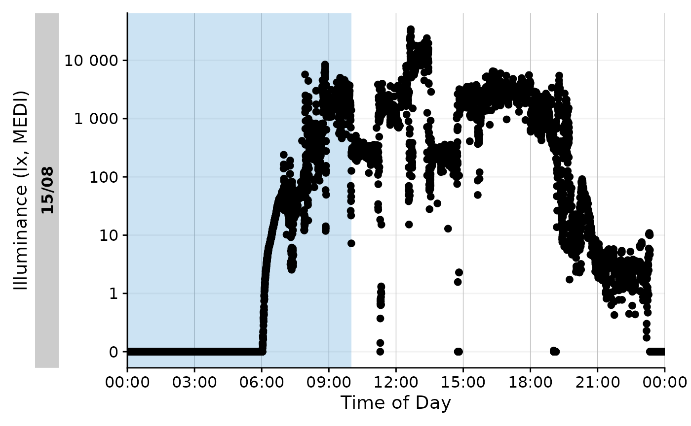

This article focuses on two important aspects of light logger analysis: structuring data into relevant groups and calculating personal light exposure metrics for them. LightLogR contains a large set of over 60 metrics and sub-metrics across multiple functions, where each constitutes a family of light exposure metrics. The following packages are needed for the analysis:
Please note that this article uses the base pipe operator
|>. You need an R version equal to or greater than 4.1.0 to use it. If you are using an older version, you can replace it with themagrittrpipe operator%>%.
Importing Data
We will use data imported and cleaned already in the article Import & Cleaning.
#this assumes the data is in the cleaned_data folder in the working directory
data <- readRDS("cleaned_data/ll_data.rds")As can be seen by using gg_overview(), the dataset
contains 17 ids with one weeks worth of data each, and one to three
participants per week.
data |> gg_overview()
Metric principles
There are a lot of metrics associated with personal light exposure. You can find the function reference to all of them in the appropriate reference section. There are a few important distinctions between metrics that are important to understand:
Some metrics require or work best with a specific time frame, usually one day, while others are calculated over an arbitrary length of time. For example, the function
interdaily_stability()calculates a metric over multiple days, while a function likemidpointCE()calculates the midpoint of the cumulative light exposure within the given time series - this is less useful for multiple days, where the midpoint is just a time point during these days. E.g., for two similar light exposure patterns across two days, the midpoint of cumulative light exposure across those two days will be around midnight, which is not particularly informative. Much more sensible is the midpoint of the light exposure for each day. To enable this, data has to be grouped within days (or other relevant time frames, like sleep/wake-phase).Some metrics are submetrics within a family and have to be actively chosen through the arguments of the function. An example is
duration_above_threshold()that, despite its name also provides the metricsduration below thresholdandduration within threshold. Depending on itscomparisonargument, and whether one or twothresholds are provided, the function will calculate different metrics.Some metric functions calculate multiple submetrics at once, like
bright_dark_period(). As stated above, this type of function contains metrics accessible through a function argument,periodin this case, which allows to specify whether the brightest or darkest periods of the day are required. Independent of this, the function will calculate multiple submetrics at once, which are theonset,midpoint, andoffsetof the respective period, and also themeanlight level during that period.
We will cover the practical considerations following from these aspects in the following sections. Further, every function documentation explicitly states whether different metrics are accessible through parameters, and which metrics are calculated by default.
Note: Most metrics require complete and regular data for a sensible output. While some metrics can handle missing data, it is generally advisable to clean the data before calculating metrics. LightLogR helps to identify gaps and irregularities and can also aggregate data to larger intervals, which can be acceptable for small gaps. In cases of larger gaps, dates or participants might have to be removed from analysis.
To log or not to log (transform)
Light exposure data (e.g., Illuminance, or melanopic EDI) is not normally distributed (see #. By their nature, their values are often highly skewed, and also overdispersed. Additionally, the data tend to show an excess of zero values (so called zero-inflation). The paper How to deal with darkness: Modelling and visualization of zero-inflated personal light exposure data on a logarithmic scale by Zauner et al. (2025) explores ways to deal with this.
For simplicity, this article will just use the untransformed
melanopic EDI values to teach the basics on how metric functions work in
LightLogR. However, we generally recommend to use
log_zero_inflated() whenever there are means calculated in
light exposure, which is a simple way to deal with zero-values. See the
article Log
transformation for more information on this. The function
log_zero_inflated() is used to log-transform the data,
while exp_zero_inflated() is used to back-transform the
data.
Metric calculation: basics
All metric functions are by default agnostic to the type of data. They require vectors of numeric data (e.g., light data) and commonly also of datetimes. This means that the functions can be used outside of the LightLogR framework, if applied correctly. Let us try this with a simple example for a days worth of light data for one participant across two functions.

Time above threshold (TAT)
The first example metric we will calculate is the time above
threshold (or TAT) for a threshold of 250 lx mel EDI. TAT is
calculated by the function duration_above_threshold().
duration_above_threshold(
Light.vector = data_Id201$MEDI,
Time.vector = data_Id201$Datetime,
threshold = 250
)
#> [1] "34500s (~9.58 hours)"Specifying the argument comparison = "below" will
calculate the time below the threshold.
duration_above_threshold(
Light.vector = data_Id201$MEDI,
Time.vector = data_Id201$Datetime,
threshold = 250,
comparison = "below"
)
#> [1] "51900s (~14.42 hours)"And specifying two thresholds will calculate the time within the thresholds.
duration_above_threshold(
Light.vector = data_Id201$MEDI,
Time.vector = data_Id201$Datetime,
threshold = c(10,250)
)
#> [1] "15320s (~4.26 hours)"Brightest 10 hours of the day (L10)
The second example metric yields multiple submetrics at once. The
function bright_dark_period() calculates the brightest and
darkest periods of the day. By default, it calculates the brightest 10
hour period of the day. By setting as_df = TRUE, the
function will return a data frame we can pipe to gt() for a
better output
bright_dark_period(
Light.vector = data_Id201$MEDI,
Time.vector = data_Id201$Datetime,
as.df = TRUE
) |>
gt() |> tab_header("M10")| M10 | |||
| brightest_10h_mean | brightest_10h_midpoint | brightest_10h_onset | brightest_10h_offset |
|---|---|---|---|
| 2506.202 | 2023-08-15 13:42:01 | 2023-08-15 08:42:11 | 2023-08-15 18:42:01 |
Looping
Calculating the darkest period of the day is tricky, as it likely traverses midnight. In the following code we can see that the darkest 10-hour period of day begins at midnight and ends at 10 am, which would be very coincidental. (Note that commonly, the darkest 5-hour period is calculated. We deviate from this to make this point.)
M10_wrong <-
bright_dark_period(
Light.vector = data_Id201$MEDI,
Time.vector = data_Id201$Datetime,
as.df = TRUE,
period = "darkest",
timespan = "10 hours"
)
M10_wrong |> gt() |> tab_header("M10 without looping")| M10 without looping | |||
| darkest_10h_mean | darkest_10h_midpoint | darkest_10h_onset | darkest_10h_offset |
|---|---|---|---|
| 305.2523 | 2023-08-15 04:59:51 | 2023-08-15 00:00:01 | 2023-08-15 09:59:51 |
We also see that this makes little sense, if we visualize this portion. The blue color indicates the darkest 10-hour period of the day.
data_Id201 |>
mutate(State = ifelse(
Datetime >= M10_wrong$darkest_10h_onset &
Datetime <= M10_wrong$darkest_10h_offset, "M10", NA
)) |>
gg_day() |>
gg_states(State, aes_fill = State) +
guides(fill = "none")
To solve this, bright_dark_period() and some other
functions have the option to loop the day.
M10 <-
bright_dark_period(
Light.vector = data_Id201$MEDI,
Time.vector = data_Id201$Datetime,
as.df = TRUE,
period = "darkest",
timespan = "10 hours",
loop = TRUE
)
M10 |> gt()| darkest_10h_mean | darkest_10h_midpoint | darkest_10h_onset | darkest_10h_offset |
|---|---|---|---|
| 1.423622 | 2023-08-15 01:36:51 | 2023-08-15 20:37:01 | 2023-08-15 06:36:51 |
This is more plausible, and can also be visualized easily.
data_Id201 |>
mutate(State = ifelse(
Datetime >= M10$darkest_10h_onset |
Datetime <= M10$darkest_10h_offset, "M10", NA
)) |>
gg_day() |>
gg_states(State, aes_fill = State) +
guides(fill = "none")
Metric calculation: advanced
More often than not, metrics are calculated for many participants
over prolonged periods of time. In this case, the singular calculation
as shown above is inefficient. The dplyr family of
dplyr::summarize() and dplyr::reframe() make
this much easier.
Be sure to have the data prepared in a way that metric functions can
be applied correctly. This is the responsibility of the
user, as many functions will provide an output, as long as the
input vectors are of the correct type and length. In our case we already
prepared the data correctly in the Import
& Cleaning article. The data is already grouped by
Id, and has no gaps or irregular data
Summarize
The dplyr::summarize() function is used to calculate
metrics for each group of data. In the following example, we will
calculate Interdaily Stability (IS) for all participants in the data
set, giving us the variability of the 24h light exposure patterns across
the full 6 days of data compared to their average, ranging between 0
(Gaussian noise) and 1 (Perfect stability). For brevity, only the first
6 Ids will be shown.
data |>
summarize(
interdaily_stability(
Light.vector = MEDI,
Datetime.vector = Datetime,
as.df = TRUE
)
) |>
head() |>
gt() | Id | interdaily_stability |
|---|---|
| 201 | 0.5079676 |
| 202 | 0.1986105 |
| 204 | 0.2663354 |
| 205 | 0.3215539 |
| 206 | 0.2367288 |
| 208 | 0.1937092 |
Grouping
By default, data imported with LightLogR is grouped by
Id, which represents individual participants. When using
the dplyr family of functions, grouping is essential, as it
specifies the subgroups of data for which the metrics are calculated. In
the following example, we will calculate the TAT 250 lx MEDI for all
participants in the data set. We only show the first 6 participants, as
it becomes readily apparent that time above threshold for 6 days might
not be the most informative parametrization of the metric.
data |>
summarize(
duration_above_threshold(
Light.vector = MEDI,
Time.vector = Datetime,
threshold = 250,
as.df = TRUE
)
) |>
head() |>
gt()| Id | duration_above_250 |
|---|---|
| 201 | 160180s (~1.85 days) |
| 202 | 29970s (~8.32 hours) |
| 204 | 147340s (~1.71 days) |
| 205 | 98520s (~1.14 days) |
| 206 | 6320s (~1.76 hours) |
| 208 | 47140s (~13.09 hours) |
Instead, we can calculate the TAT 250 lx MEDI for each participant and day of data. This is more informative, as it allows us to see how the metric changes over time. The final output is for the first two Ids.
#create a new column in the data set with the weekday
data$wDay <- wday(data$Datetime, label = TRUE, week_start = 1)
#group the data and calculate the metrics
TAT_250 <-
data |>
group_by(wDay, .add = TRUE) |>
summarize(
duration_above_threshold(
Light.vector = MEDI,
Time.vector = Datetime,
threshold = 250,
as.df = TRUE
), .groups = "drop_last"
)
TAT_250 |>
head(12) |>
gt()| wDay | duration_above_250 |
|---|---|
| 201 | |
| Tue | 34500s (~9.58 hours) |
| Wed | 32780s (~9.11 hours) |
| Thu | 21820s (~6.06 hours) |
| Fri | 31670s (~8.8 hours) |
| Sat | 15010s (~4.17 hours) |
| Sun | 24400s (~6.78 hours) |
| 202 | |
| Tue | 18760s (~5.21 hours) |
| Wed | 6930s (~1.93 hours) |
| Thu | 200s (~3.33 minutes) |
| Fri | 200s (~3.33 minutes) |
| Sat | 3130s (~52.17 minutes) |
| Sun | 750s (~12.5 minutes) |
Photoperiod
Another useful grouping factor is photoperiod, to differentiate the
day into day and night. LightLogR
contains a family of functions to easily deal with photoperiod. Here is
a minimal example.
#specifying coordinates (latitude/longitude)
coordinates <- c(48.521637, 9.057645)
#adding photoperiod information
data <-
data |>
add_photoperiod(coordinates)
#calculating the metric
mean_Exposure <-
data |>
group_by(photoperiod.state, .add = TRUE) |>
summarize(
mean_MEDI = mean(MEDI), .groups = "drop_last"
)
#showing the first three participants
mean_Exposure |>
head(6) |>
gt() |>
fmt_number(mean_MEDI)| photoperiod.state | mean_MEDI |
|---|---|
| 201 | |
| day | 962.52 |
| night | 0.70 |
| 202 | |
| day | 317.06 |
| night | 2.28 |
| 204 | |
| day | 2,194.02 |
| night | 6.94 |
Same as above, we can summarize the data further:
mean_Exposure |>
group_by(photoperiod.state) |>
summarize_numeric(prefix = ""
) |>
gt() |>
fmt_number(mean_MEDI)| photoperiod.state | mean_MEDI | episodes |
|---|---|---|
| day | 727.29 | 17 |
| night | 6.61 | 17 |
This easily gives us metrics based on daily photoperiod. Metric calculation can utilize photoperiod information in other ways, too. More information on dealing with photoperiods can be found in the article Photoperiod.
Metric statistics
With the dataframe TAT_250, we can easily calculate
statistics for each participant. This can be done manually, e.g., with
another call to dplyr::summarize(), or semi-automatic,
e.g., with packages like gtsummary. In the following
example, we will calculate the mean and standard deviation of the TAT
250 lx MEDI for each participant, formatted as HH:MM
through a styling function.
#styling formula for time
style_time <- function(x, format = "%H:%M"){
x |>
as.numeric() |>
hms::as_hms() |>
as.POSIXlt() |>
format(format)
}
#Table output
TAT_250 |>
tbl_summary(by = Id, include = -wDay,
statistic = list(duration_above_250 ~ "{mean} ({sd})"),
digits = list(duration_above_250 ~ style_time),
label = list(duration_above_250 = "Time above 250 lx mel EDI")
)| Characteristic |
201 N = 61 |
202 N = 61 |
204 N = 61 |
205 N = 61 |
206 N = 61 |
208 N = 61 |
209 N = 61 |
210 N = 61 |
212 N = 61 |
213 N = 61 |
214 N = 61 |
215 N = 61 |
216 N = 61 |
218 N = 61 |
219 N = 61 |
221 N = 61 |
222 N = 61 |
|---|---|---|---|---|---|---|---|---|---|---|---|---|---|---|---|---|---|
| Time above 250 lx mel EDI | 07:24 (02:06) | 01:23 (02:00) | 06:49 (01:17) | 04:33 (02:20) | 00:17 (00:24) | 02:10 (01:06) | 04:07 (02:30) | 08:39 (01:16) | 04:50 (01:27) | 02:33 (00:52) | 04:38 (01:51) | 02:06 (01:17) | 04:07 (00:57) | 01:26 (01:17) | 02:45 (00:51) | 01:00 (00:57) | 00:33 (00:43) |
| 1 Mean (SD) | |||||||||||||||||
mean_daily()
The function mean_daily() is a helper to summarize daily
data further. It takes summary results that either contain a date or a
weekday column and calculates the mean of the metric for weekdays,
weekends, and, the mean day (based on (5 x weekdays + 2 x weekends)
/ 7).
#mean daily calculation
TAT_250_daily <-
mean_daily(
TAT_250,
Weekend.type = wDay
)
TAT_250_daily |>
head(6) |>
gt()| wDay | average_duration_above_250 |
|---|---|
| 201 | |
| Mean daily | 27196s (~7.55 hours) |
| Weekday | 30192s (~8.39 hours) |
| Weekend | 19705s (~5.47 hours) |
| 202 | |
| Mean daily | 5213s (~1.45 hours) |
| Weekday | 6522s (~1.81 hours) |
| Weekend | 1940s (~32.33 minutes) |
There is a variant of mean_daily() called
mean_daily_metric(), which is a convenience function to
combine the calculation of a single-return-value, duration-based metric
with the mean daily calculation. We can use it to calculate
duration_above_250(lx) from scratch
data |>
mean_daily_metric(
Variable = MEDI,
threshold = 250
) |>
head() |>
gt()| Date | average_duration_above_250 |
|---|---|
| 201 | |
| Mean daily | 27196s (~7.55 hours) |
| Weekday | 30192s (~8.39 hours) |
| Weekend | 19705s (~5.47 hours) |
| 202 | |
| Mean daily | 5213s (~1.45 hours) |
| Weekday | 6522s (~1.81 hours) |
| Weekend | 1940s (~32.33 minutes) |
The function has (very) limited options to change the
metric_type. In this case, we change the function to the
longest continuous period above threshold. Basically, metric functions
that return a numeric column can be used.
data |>
mean_daily_metric(
Variable = MEDI,
metric_type = period_above_threshold,
threshold = 250
) |>
head() |>
gt()| Date | average_period_above_250 |
|---|---|
| 201 | |
| Mean daily | 6313s (~1.75 hours) |
| Weekday | 6898s (~1.92 hours) |
| Weekend | 4850s (~1.35 hours) |
| 202 | |
| Mean daily | 1224s (~20.4 minutes) |
| Weekday | 1440s (~24 minutes) |
| Weekend | 685s (~11.42 minutes) |
summarize_numeric()/summarise_numeric()
We can even summarize the data further with
summarize_numeric(), which takes a dataset and calculates
the average of numeric columns, as well as the number of episodes in the
group. This makes no sense within participants, where it would just
average Weekday, Weekend, and
Mean daily. If we regroup the data, however, we can gain
usefull insights.
TAT_250_daily |>
group_by(wDay) |>
summarize_numeric(
) |>
gt() |>
fmt_duration(mean_average_duration_above_250,
input_units = "seconds", duration_style = "colon-sep")| wDay | mean_average_duration_above_250 | episodes |
|---|---|---|
| Mean daily | 03:32:10 | 17 |
| Weekday | 03:45:37 | 17 |
| Weekend | 02:58:35 | 17 |
We can see that our participants have slightly more time above 250 lx on weekdays, compared to weekends (03:45 vs. 02:58, respectively)
Metric calculation: batch
In the final section, we will add more metrics to the analysis, including ones with multiple sub-metrics. Further, we imagine we want to know how these metrics change from the first half of the experiment (August/September) to the second half (October/November).
data <- data |>
mutate(
Month = case_when(month(Datetime) %in% 8:9 ~ "Aug/Sep",
month(Datetime) %in% 10:11 ~ "Oct/Nov")
)
metrics <-
data |>
group_by(Month, Id, wDay) |>
summarize(
timing_above_threshold(MEDI, Datetime, threshold = 250, as.df = TRUE),
duration_above_threshold(MEDI, Datetime, threshold = 250, as.df = TRUE),
average_medi =
MEDI |> log_zero_inflated() |> mean() |> exp_zero_inflated(), #calculate zero inflated log transformed mean
dose(MEDI, Datetime, as.df = TRUE),
.groups = "drop_last"
)
#first 6 rows
metrics |>
head() |>
gt()| wDay | mean_timing_above_250 | first_timing_above_250 | last_timing_above_250 | duration_above_250 | average_medi | dose |
|---|---|---|---|---|---|---|
| Aug/Sep - 201 | ||||||
| Tue | 2023-08-15 13:55:49 | 2023-08-15 07:48:01 | 2023-08-15 19:43:41 | 34500s (~9.58 hours) | 23.910527 | 26273.415 |
| Wed | 2023-08-16 12:53:04 | 2023-08-16 07:03:01 | 2023-08-16 19:46:41 | 32780s (~9.11 hours) | 14.897098 | 18545.278 |
| Thu | 2023-08-17 14:25:57 | 2023-08-17 08:41:11 | 2023-08-17 19:27:11 | 21820s (~6.06 hours) | 6.804520 | 6315.771 |
| Fri | 2023-08-18 13:12:42 | 2023-08-18 07:14:41 | 2023-08-18 18:51:21 | 31670s (~8.8 hours) | 11.143937 | 19902.681 |
| Sat | 2023-08-19 11:29:02 | 2023-08-19 07:08:41 | 2023-08-19 20:40:41 | 15010s (~4.17 hours) | 6.613548 | 13428.829 |
| Sun | 2023-08-20 12:46:28 | 2023-08-20 07:23:01 | 2023-08-20 19:12:21 | 24400s (~6.78 hours) | 14.730145 | 4399.761 |
The operation above yields a data frame with six metrics across 102
participant days (6 days for 17 participants). The grouping for
Month did not add additional groups, as each participant
day is already solely in the "Aug/Sep" or
"Oct/Nov" group.
Summarize metrics
We can summarize the data different ways.
Within LightLogR, we can use the
mean_daily() and summarize_numeric()
functions. Both will by default automatically transform
datetime columns (type POSIXct) to
time columns (type hms), which is much more
sensible in most cases to calculate averages
#calculating weekday, weekend, and mean daily summaries for each group
metrics |>
#calculate weekday, weekend, and mean daily summaries for each group:
mean_daily(wDay, prefix = "", filter.empty = TRUE) |> #remove empty rows
group_by(Month, wDay) |> #regroup so that we can summarize across Participants
summarize_numeric(prefix = "") |>
gt() |>
fmt_number(c(average_medi, dose))| wDay | mean_timing_above_250 | first_timing_above_250 | last_timing_above_250 | duration_above_250 | average_medi | dose | episodes |
|---|---|---|---|---|---|---|---|
| Aug/Sep | |||||||
| Mean daily | 13:37:13 | 08:46:17 | 19:10:18 | 15681s (~4.36 hours) | 8.67 | 12,678.75 | 11 |
| Weekday | 13:31:57 | 08:34:01 | 19:03:32 | 16798s (~4.67 hours) | 9.04 | 12,158.59 | 11 |
| Weekend | 13:50:24 | 09:16:57 | 19:27:13 | 12890s (~3.58 hours) | 7.75 | 13,979.15 | 11 |
| Oct/Nov | |||||||
| Mean daily | 14:04:54 | 10:14:29 | 18:24:06 | 7250s (~2.01 hours) | 5.49 | 5,558.11 | 6 |
| Weekday | 13:50:26 | 10:02:25 | 18:32:38 | 7558s (~2.1 hours) | 5.28 | 5,660.88 | 6 |
| Weekend | 14:13:34 | 10:30:34 | 17:57:48 | 7273s (~2.02 hours) | 6.07 | 5,741.14 | 7 |
The number of episodes shows us that there were 11 values in Aug/Sep, and 6 in Oct/Nov - except for Weekends, which have 7. This is because one participant crosses Sep/Oct. Checking this participants data shows that only the last day is in October, which is a Sunday - thus being part of the weekend.
data |>
filter(Id == 214) |>
pull(Datetime) |>
date() |>
unique()
#> [1] "2023-09-26" "2023-09-27" "2023-09-28" "2023-09-29" "2023-09-30"
#> [6] "2023-10-01"We can wrangle the same data differently, to get averages across all days
#calculating weekday daily summaries for each group
metrics |>
summarize_numeric(prefix = "") |> #summarize across participants
summarize_numeric(prefix = "") |> #summarize by month
gt() |>
fmt_number(c(average_medi, dose))| Month | mean_timing_above_250 | first_timing_above_250 | last_timing_above_250 | duration_above_250 | average_medi | dose | episodes |
|---|---|---|---|---|---|---|---|
| Aug/Sep | 13:38:46 | 08:48:41 | 19:09:20 | 15625s (~4.34 hours) | 8.66 | 12,781.74 | 11 |
| Oct/Nov | 13:44:39 | 10:06:26 | 18:14:53 | 7888s (~2.19 hours) | 5.64 | 5,946.69 | 7 |
This shows us 11 participants for the Aug/Sep timeframe and 7 for the Oct/Nov timeframe. This is in line with the summary above, which showed us one participant crossed the timeframes. Of course, filtering the data at some inbetween step to ensure there are a minimum amount of data points in each category makes sense, which we have left out here for brevity.
Using gtsummary
This section repeats the summary, but by using the popular gtsummary package.
metrics <-
metrics |>
group_by(Month) |>
select(-Id, -wDay)
#Table output
metrics |>
tbl_summary(by = Month,
statistic = list(all_continuous() ~ "{mean} (±{sd})"),
digits = list(
c(
mean_timing_above_250, first_timing_above_250,
last_timing_above_250, duration_above_250
) ~ style_time),
label = list(
mean_timing_above_250 =
"mean timing above 250 lx mel EDI (HH:MM)",
first_timing_above_250 =
"first time above 250 lx mel EDI (HH:MM)",
last_timing_above_250 =
"last time above 250 lx mel EDI (HH:MM)",
duration_above_250 = "duration above 250 lx mel EDI (HH:MM)",
average_medi = "average mel EDI (lx)",
dose = "light exposure (lx·h)"
)
)| Characteristic |
Aug/Sep N = 651 |
Oct/Nov N = 371 |
|---|---|---|
| mean timing above 250 lx mel EDI (HH:MM) | 17:55 (±15:36) | 05:37 (±06:37) |
| first time above 250 lx mel EDI (HH:MM) | 13:05 (±15:53) | 01:47 (±06:45) |
| last time above 250 lx mel EDI (HH:MM) | 23:26 (±15:30) | 09:55 (±06:33) |
| duration above 250 lx mel EDI (HH:MM) | 04:19 (±02:57) | 02:02 (±01:32) |
| average mel EDI (lx) | 8.7 (±6.6) | 5.5 (±5.0) |
| light exposure (lx·h) | 12,846 (±12,122) | 5,618 (±6,612) |
| 1 Mean (±SD) | ||
And that is all you need to work with metrics in
LightLogR. Be sure to look at the documentation for each
function to understand the parameters and outputs and at the reference
section to get an overview of all available metrics.